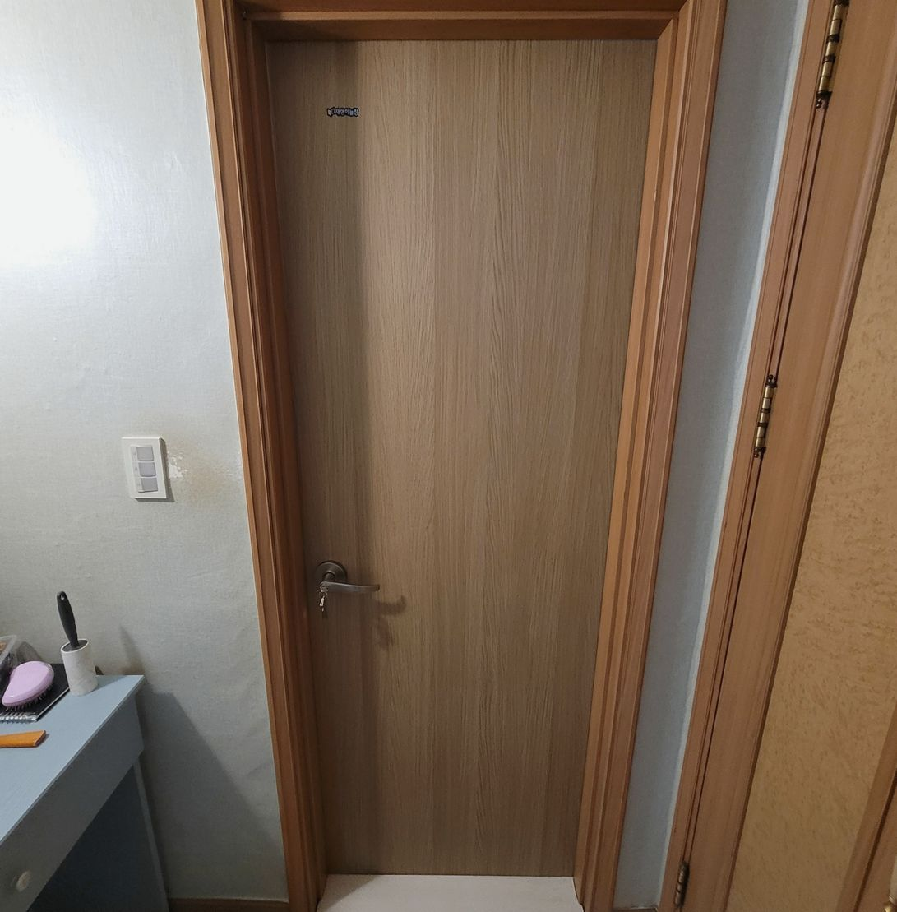
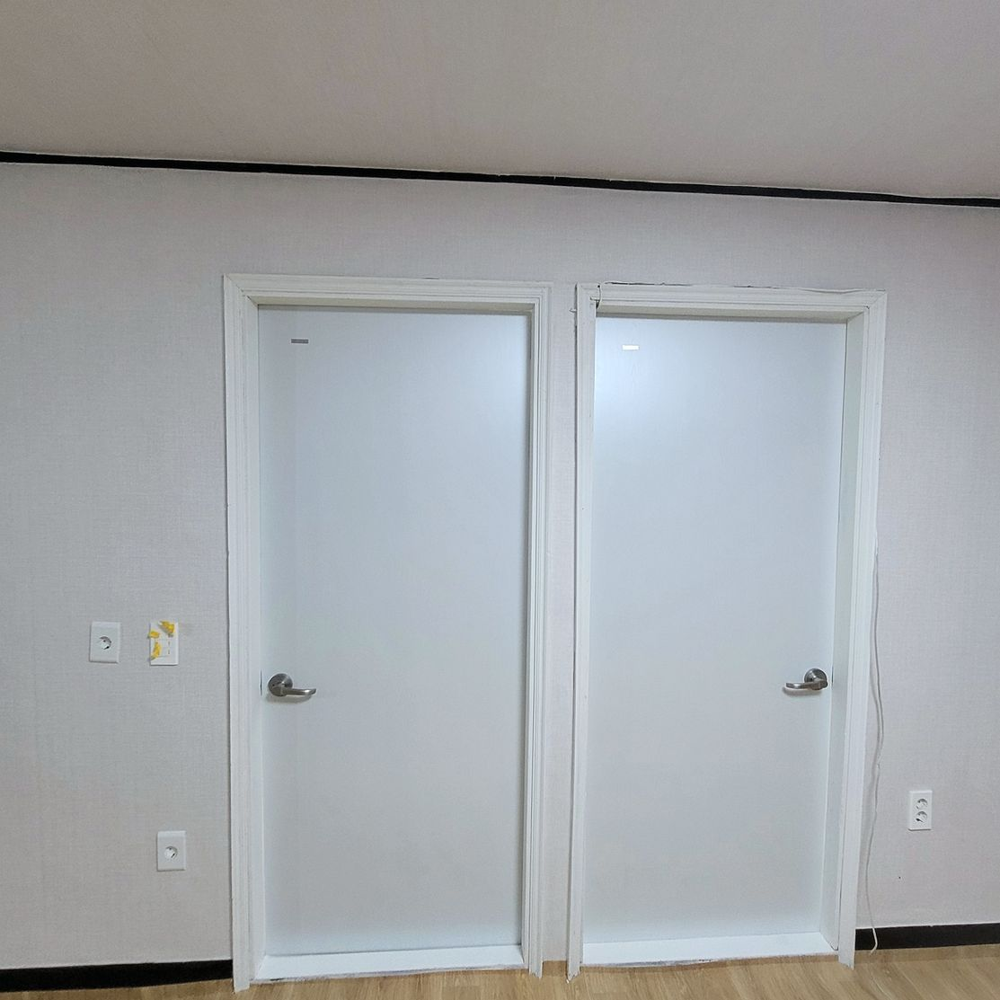
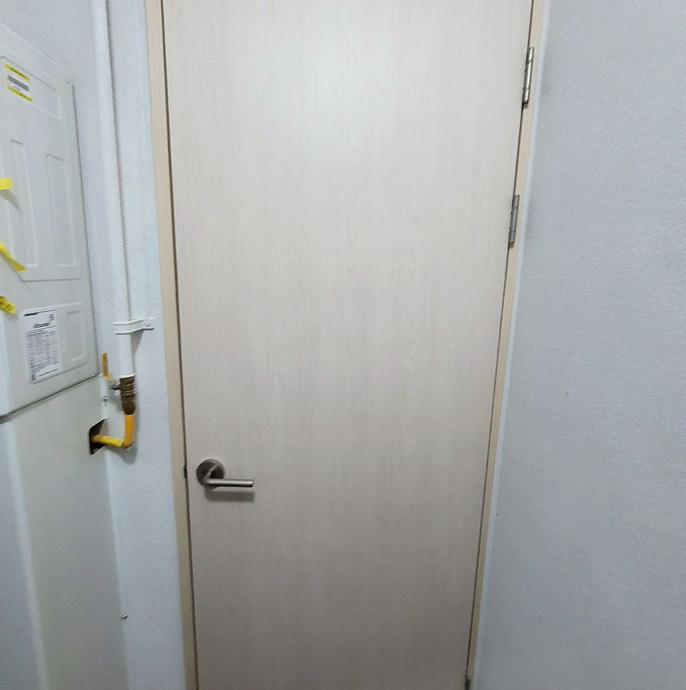
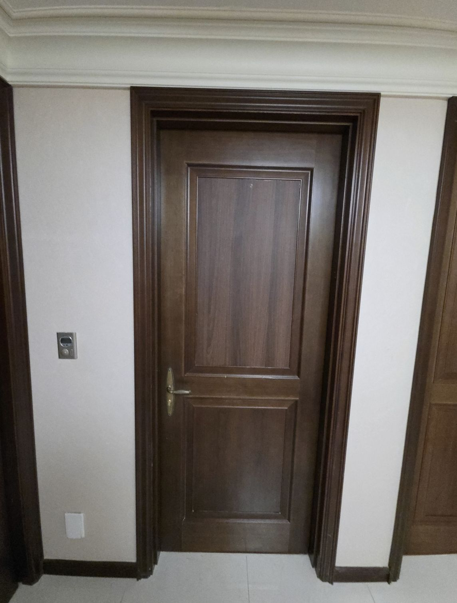
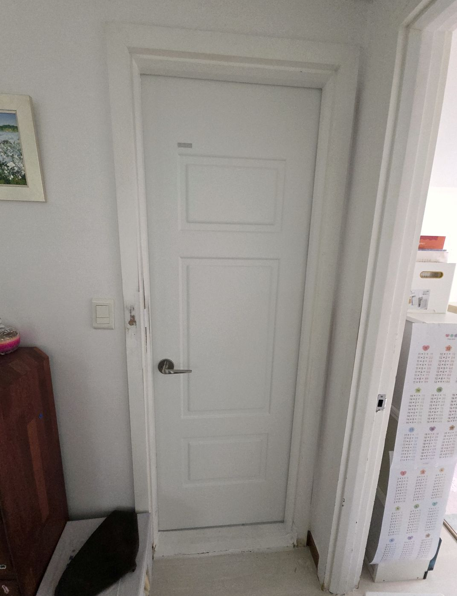
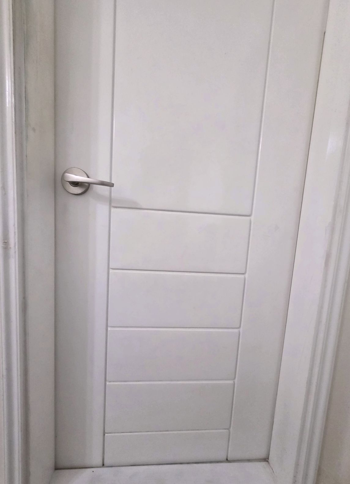

이사 오니 전 세입자가 쓰던 욕실 문짝이 다 부풀어 있었는데 습기에 강한 소재로 교체해주셔서 재발 걱정을 덜었어요. 가격도 부분 교체라 생각보다 부담이 적었어요.
전현O · 구로구 · 2026.05
습기를 먹은 문은 다시 마르지 않습니다.
물에 강한 ABS 도어로 교체하고, 문틀이 멀쩡하면 문짝만 바꿔 비용을 줄입니다.
문 전체 사진을 찍어서 문자로 보내주시면 문짝만 교체하면 되는지 방문 전에 먼저 판단해 알려드립니다.
아래 중 하나라도 해당되면 사진 한 장만 보내주세요. 방문 전에 원인과 예상 비용을 먼저 알려드립니다
안쪽 MDF가 물을 먹고 팽창한 상태입니다. 말려도 돌아오지 않습니다.
마감 필름이 습기로 분리된 겁니다. 손대면 더 벗겨집니다.
문 속에 습기가 갇혀 있습니다.
물을 먹어 무게가 늘어 경첩이 버티지 못하는 상태입니다.
문만 바꿔도 방 분위기가 크게 달라집니다.
속이 비어 있는 문은 충격에 쉽게 뚫립니다.
실제 작업한 현장입니다. 비슷한 상태라면 참고해 보세요

욕실문아래쪽이 부풀어 벗겨지던 현장.

문짝만 교체문틀은 살리고 문짝만 바꿔 비용을 줄였습니다.

실측 재단기성 규격이 안 맞아 실측 후 제작한 사례.

일괄 시공이사 전 한 번에 정리한 현장입니다.

원룸임대 전 정리 작업.

파손 교체속이 비어 뚫린 문을 새것으로 바꿨습니다.
서울·경기·인천 전역 출장 시공. 현장을 보고 필요한 것만 제안드립니다
물에 강한 ABS 소재로 교체합니다. 습기 많은 욕실에는 사실상 표준입니다.
생활 흠집과 변색이 심한 문을 새 문짝으로 바꿉니다. 색상은 벽·마루 톤에 맞춰 고르실 수 있습니다.
문틀이 멀쩡하면 문짝과 경첩만 바꿔 비용을 크게 줄일 수 있습니다. 가능한지 사진으로 먼저 봐드립니다.
옛날 규격이라 기성 문짝이 안 맞는 집은 현장 실측 후 치수에 맞춰 제작합니다.
전화가 부담스러우면 문자로 사진만 보내주셔도 됩니다. 사진 확인 후 견적부터 알려드립니다
문 전체가 나오게 찍어 보내주시면 사진을 확인하고 견적 비용을 말씀드립니다.
정확한 치수로 정밀 시공하는 것이 원칙입니다. 현장에서 색상과 방식을 함께 상담하실 수 있습니다.
치수에 맞춰 제작한 뒤 편하신 날짜로 방문 일정을 잡습니다.
설치를 마치고 기존 문은 저희가 철거해 가져갑니다. 따로 버리실 필요 없습니다.
욕실·안방 문짝 교체를 맡겨주신 분들이 남겨주신 후기를 그대로 옮겼습니다.
이사 오니 전 세입자가 쓰던 욕실 문짝이 다 부풀어 있었는데 습기에 강한 소재로 교체해주셔서 재발 걱정을 덜었어요. 가격도 부분 교체라 생각보다 부담이 적었어요.
환기가 잘 안 되는 구조라 문짝이 유독 빨리 상하는데 작업하시면서 왜 이렇게 상했는지 원인도 같이 설명해주셨습니다. 곰팡이 냄새가 사라져서 정말 좋습니다.
안방 문이 습기로 휘어서 문틀에 걸려 잘 안 닫혔는데 상태를 보시더니 교체가 필요한 부분과 아닌 부분을 정확히 나눠서 설명해주셨습니다. 주변에 비슷한 문제 있는 분들께 소개하고 있습니다.
안방 문이 습기로 휘어서 문틀에 걸려 잘 안 닫혔는데 여닫는 부드러움까지 마지막에 직접 확인시켜주셨습니다. 곰팡이 냄새가 사라져서 정말 좋습니다.
곰팡이 냄새가 문짝 쪽에서 나서 열어봤더니 속이 다 썩어 있었는데 먼지랑 소음 최소화해서 작업해주셔서 좋았어요. 예상보다 빨리 끝나서 하루 만에 다 마무리됐습니다.
곰팡이 냄새가 문짝 쪽에서 나서 열어봤더니 속이 다 썩어 있었는데 상태를 보시더니 교체가 필요한 부분과 아닌 부분을 정확히 나눠서 설명해주셨습니다. 다음에 다른 문짝도 상하면 또 연락드릴 생각이에요.
이사 오니 전 세입자가 쓰던 욕실 문짝이 다 부풀어 있었는데 문틀 상태까지 같이 확인하고 필요한 부분만 손봐주셨습니다. 곰팡이 냄새가 사라져서 정말 좋습니다.
욕실 문짝 아래쪽이 습기로 부풀어서 안 닫힌 지 오래됐는데 작업하시면서 왜 이렇게 상했는지 원인도 같이 설명해주셨습니다. 주변에 비슷한 문제 있는 분들께 소개하고 있습니다.
욕실 문짝 아래쪽이 습기로 부풀어서 안 닫힌 지 오래됐는데 철거하고 설치하는 과정을 사진으로 다 보여주셨습니다. 곰팡이 냄새가 사라져서 정말 좋습니다.
안방 문이 습기로 휘어서 문틀에 걸려 잘 안 닫혔는데 철거하고 설치하는 과정을 사진으로 다 보여주셨습니다. 이제 습기 때문에 문 걱정 안 해도 돼서 편합니다.
안방 문이 습기로 휘어서 문틀에 걸려 잘 안 닫혔는데 여닫는 부드러움까지 마지막에 직접 확인시켜주셨습니다. 이제 습기 때문에 문 걱정 안 해도 돼서 편합니다.
안방 문이 눅눅해지더니 색이 변하고 뒤틀렸는데 작업하시면서 왜 이렇게 상했는지 원인도 같이 설명해주셨습니다. 친절하게 설명해주셔서 믿고 맡길 수 있었습니다.
안방 문이 습기로 휘어서 문틀에 걸려 잘 안 닫혔는데 하루 만에 문짝 두 개를 다 교체해주셨어요. 습기 강한 소재라 이번엔 오래갈 것 같아 안심이 됩니다.
환기가 잘 안 되는 구조라 문짝이 유독 빨리 상하는데 기존 문틀을 살리면서 문짝만 바꿔서 비용을 아낄 수 있었어요. 습기 강한 소재라 이번엔 오래갈 것 같아 안심이 됩니다.
안방 문이 습기로 휘어서 문틀에 걸려 잘 안 닫혔는데 여닫는 부드러움까지 마지막에 직접 확인시켜주셨습니다. 가격도 부분 교체라 생각보다 부담이 적었어요.
오래된 빌라라 욕실 문짝이 다 삭아 있었는데 먼지랑 소음 최소화해서 작업해주셔서 좋았어요. 전셋집인데 집주인분도 결과 보고 만족하셨어요.
안방 문이 습기로 휘어서 문틀에 걸려 잘 안 닫혔는데 하루 만에 문짝 두 개를 다 교체해주셨어요. 이 정도로 티 안 나게 잘 맞춰주실 줄 몰랐어요.
습기가 심한 집이라 몇 년마다 문짝이 상하는데 문틀 상태까지 같이 확인하고 필요한 부분만 손봐주셨습니다. 예상보다 빨리 끝나서 하루 만에 다 마무리됐습니다.
다른 업체는 문짝 통째로 새로 맞추자고 견적이 너무 셌는데 상태를 보시더니 교체가 필요한 부분과 아닌 부분을 정확히 나눠서 설명해주셨습니다. 이 정도로 티 안 나게 잘 맞춰주실 줄 몰랐어요.
환기가 잘 안 되는 구조라 문짝이 유독 빨리 상하는데 새 문짝 색상이랑 무늬를 기존 인테리어에 맞춰서 골라주셨어요. 이제 문 여닫을 때 걸리는 것도 없고 냄새도 안 납니다.
화장실 문 페인트가 벗겨지고 밑동이 물러졌는데 먼지랑 소음 최소화해서 작업해주셔서 좋았어요. 습기 강한 소재라 이번엔 오래갈 것 같아 안심이 됩니다.
안방 문이 눅눅해지더니 색이 변하고 뒤틀렸는데 작업하시면서 왜 이렇게 상했는지 원인도 같이 설명해주셨습니다. 예상보다 빨리 끝나서 하루 만에 다 마무리됐습니다.
이사 오니 전 세입자가 쓰던 욕실 문짝이 다 부풀어 있었는데 경첩이랑 손잡이 위치까지 꼼꼼하게 맞춰주셨습니다. 습기 강한 소재라 이번엔 오래갈 것 같아 안심이 됩니다.
문짝 아래쪽만 갈아도 되는지 몰라서 그냥 두고 있었는데 경첩이랑 손잡이 위치까지 꼼꼼하게 맞춰주셨습니다. 가격도 부분 교체라 생각보다 부담이 적었어요.
환기가 잘 안 되는 구조라 문짝이 유독 빨리 상하는데 작업하시면서 왜 이렇게 상했는지 원인도 같이 설명해주셨습니다. 이 정도로 티 안 나게 잘 맞춰주실 줄 몰랐어요.
문짝 아래쪽만 갈아도 되는지 몰라서 그냥 두고 있었는데 상태를 보시더니 교체가 필요한 부분과 아닌 부분을 정확히 나눠서 설명해주셨습니다. 곰팡이 냄새가 사라져서 정말 좋습니다.
문짝 아래를 눌러보면 스펀지처럼 물컹거렸는데 하루 만에 문짝 두 개를 다 교체해주셨어요. 예상보다 빨리 끝나서 하루 만에 다 마무리됐습니다.
안방 문이 습기로 휘어서 문틀에 걸려 잘 안 닫혔는데 문짝 아래쪽만 잘라내고 방수 소재로 이어 붙여주셨어요. 주변에 비슷한 문제 있는 분들께 소개하고 있습니다.
습기가 심한 집이라 몇 년마다 문짝이 상하는데 기존 문틀을 살리면서 문짝만 바꿔서 비용을 아낄 수 있었어요. 곰팡이 냄새가 사라져서 정말 좋습니다.
욕실 문짝 아래쪽이 습기로 부풀어서 안 닫힌 지 오래됐는데 철거하고 설치하는 과정을 사진으로 다 보여주셨습니다. 이제 문 여닫을 때 걸리는 것도 없고 냄새도 안 납니다.
다른 업체는 문짝 통째로 새로 맞추자고 견적이 너무 셌는데 기존 문틀을 살리면서 문짝만 바꿔서 비용을 아낄 수 있었어요. 이제 문 여닫을 때 걸리는 것도 없고 냄새도 안 납니다.
환기가 잘 안 되는 구조라 문짝이 유독 빨리 상하는데 문짝 아래쪽만 잘라내고 방수 소재로 이어 붙여주셨어요. 습기 강한 소재라 이번엔 오래갈 것 같아 안심이 됩니다.
문짝 아래를 눌러보면 스펀지처럼 물컹거렸는데 작업하시면서 왜 이렇게 상했는지 원인도 같이 설명해주셨습니다. 전셋집인데 집주인분도 결과 보고 만족하셨어요.
다른 업체는 문짝 통째로 새로 맞추자고 견적이 너무 셌는데 기존 문틀을 살리면서 문짝만 바꿔서 비용을 아낄 수 있었어요. 새 문짝 다니까 욕실 전체가 환해진 느낌이에요.
오래된 빌라라 욕실 문짝이 다 삭아 있었는데 하루 만에 문짝 두 개를 다 교체해주셨어요. 전셋집인데 집주인분도 결과 보고 만족하셨어요.
곰팡이 냄새가 문짝 쪽에서 나서 열어봤더니 속이 다 썩어 있었는데 철거하고 설치하는 과정을 사진으로 다 보여주셨습니다. 곰팡이 냄새가 사라져서 정말 좋습니다.
습기가 심한 집이라 몇 년마다 문짝이 상하는데 상태를 보시더니 교체가 필요한 부분과 아닌 부분을 정확히 나눠서 설명해주셨습니다. 다음에 다른 문짝도 상하면 또 연락드릴 생각이에요.
욕실 문짝 아래쪽이 습기로 부풀어서 안 닫힌 지 오래됐는데 여닫는 부드러움까지 마지막에 직접 확인시켜주셨습니다. 주변에 비슷한 문제 있는 분들께 소개하고 있습니다.
습기가 심한 집이라 몇 년마다 문짝이 상하는데 작업하시면서 왜 이렇게 상했는지 원인도 같이 설명해주셨습니다. 이제 문 여닫을 때 걸리는 것도 없고 냄새도 안 납니다.
오래된 빌라라 욕실 문짝이 다 삭아 있었는데 문짝 아래쪽만 잘라내고 방수 소재로 이어 붙여주셨어요. 곰팡이 냄새가 사라져서 정말 좋습니다.
문짝 아래쪽만 갈아도 되는지 몰라서 그냥 두고 있었는데 문짝 아래쪽만 잘라내고 방수 소재로 이어 붙여주셨어요. 다음에 다른 문짝도 상하면 또 연락드릴 생각이에요.
문짝 아래를 눌러보면 스펀지처럼 물컹거렸는데 기존 문틀을 살리면서 문짝만 바꿔서 비용을 아낄 수 있었어요. 이 정도로 티 안 나게 잘 맞춰주실 줄 몰랐어요.
다른 업체는 문짝 통째로 새로 맞추자고 견적이 너무 셌는데 상태를 보시더니 교체가 필요한 부분과 아닌 부분을 정확히 나눠서 설명해주셨습니다. 곰팡이 냄새가 사라져서 정말 좋습니다.
습기가 심한 집이라 몇 년마다 문짝이 상하는데 기존 문틀을 살리면서 문짝만 바꿔서 비용을 아낄 수 있었어요. 이제 문 여닫을 때 걸리는 것도 없고 냄새도 안 납니다.
다른 업체는 문짝 통째로 새로 맞추자고 견적이 너무 셌는데 습기에 강한 소재로 교체해주셔서 재발 걱정을 덜었어요. 다음에 다른 문짝도 상하면 또 연락드릴 생각이에요.
욕실 문짝 아래쪽이 습기로 부풀어서 안 닫힌 지 오래됐는데 문짝 아래쪽만 잘라내고 방수 소재로 이어 붙여주셨어요. 새 문짝 다니까 욕실 전체가 환해진 느낌이에요.
오래된 빌라라 욕실 문짝이 다 삭아 있었는데 여닫는 부드러움까지 마지막에 직접 확인시켜주셨습니다. 이제 문 여닫을 때 걸리는 것도 없고 냄새도 안 납니다.
욕실 문짝 아래쪽이 습기로 부풀어서 안 닫힌 지 오래됐는데 상태를 보시더니 교체가 필요한 부분과 아닌 부분을 정확히 나눠서 설명해주셨습니다. 새 문짝 다니까 욕실 전체가 환해진 느낌이에요.
이사 오니 전 세입자가 쓰던 욕실 문짝이 다 부풀어 있었는데 먼지랑 소음 최소화해서 작업해주셔서 좋았어요. 이 정도로 티 안 나게 잘 맞춰주실 줄 몰랐어요.
욕실 문짝 아래쪽이 습기로 부풀어서 안 닫힌 지 오래됐는데 새 문짝 색상이랑 무늬를 기존 인테리어에 맞춰서 골라주셨어요. 가격도 부분 교체라 생각보다 부담이 적었어요.
다른 업체는 문짝 통째로 새로 맞추자고 견적이 너무 셌는데 상태를 보시더니 교체가 필요한 부분과 아닌 부분을 정확히 나눠서 설명해주셨습니다. 예상보다 빨리 끝나서 하루 만에 다 마무리됐습니다.
이사 오니 전 세입자가 쓰던 욕실 문짝이 다 부풀어 있었는데 기존 문틀을 살리면서 문짝만 바꿔서 비용을 아낄 수 있었어요. 친절하게 설명해주셔서 믿고 맡길 수 있었습니다.
안방 문이 눅눅해지더니 색이 변하고 뒤틀렸는데 문틀 상태까지 같이 확인하고 필요한 부분만 손봐주셨습니다. 이제 습기 때문에 문 걱정 안 해도 돼서 편합니다.
오래된 빌라라 욕실 문짝이 다 삭아 있었는데 먼지랑 소음 최소화해서 작업해주셔서 좋았어요. 이제 습기 때문에 문 걱정 안 해도 돼서 편합니다.
다른 업체는 문짝 통째로 새로 맞추자고 견적이 너무 셌는데 상태를 보시더니 교체가 필요한 부분과 아닌 부분을 정확히 나눠서 설명해주셨습니다. 다음에 다른 문짝도 상하면 또 연락드릴 생각이에요.
다른 업체는 문짝 통째로 새로 맞추자고 견적이 너무 셌는데 새 문짝 색상이랑 무늬를 기존 인테리어에 맞춰서 골라주셨어요. 전셋집인데 집주인분도 결과 보고 만족하셨어요.
문짝 아래를 눌러보면 스펀지처럼 물컹거렸는데 습기에 강한 소재로 교체해주셔서 재발 걱정을 덜었어요. 전셋집인데 집주인분도 결과 보고 만족하셨어요.
화장실 문 페인트가 벗겨지고 밑동이 물러졌는데 작업하시면서 왜 이렇게 상했는지 원인도 같이 설명해주셨습니다. 가격도 부분 교체라 생각보다 부담이 적었어요.
문짝 아래쪽만 갈아도 되는지 몰라서 그냥 두고 있었는데 기존 문틀을 살리면서 문짝만 바꿔서 비용을 아낄 수 있었어요. 새 문짝 다니까 욕실 전체가 환해진 느낌이에요.
문짝 아래쪽만 갈아도 되는지 몰라서 그냥 두고 있었는데 기존 문틀을 살리면서 문짝만 바꿔서 비용을 아낄 수 있었어요. 전셋집인데 집주인분도 결과 보고 만족하셨어요.
안방 문이 눅눅해지더니 색이 변하고 뒤틀렸는데 하루 만에 문짝 두 개를 다 교체해주셨어요. 전셋집인데 집주인분도 결과 보고 만족하셨어요.
이사 오니 전 세입자가 쓰던 욕실 문짝이 다 부풀어 있었는데 먼지랑 소음 최소화해서 작업해주셔서 좋았어요. 전셋집인데 집주인분도 결과 보고 만족하셨어요.
오래된 빌라라 욕실 문짝이 다 삭아 있었는데 새 문짝 색상이랑 무늬를 기존 인테리어에 맞춰서 골라주셨어요. 곰팡이 냄새가 사라져서 정말 좋습니다.
오래된 빌라라 욕실 문짝이 다 삭아 있었는데 문짝 아래쪽만 잘라내고 방수 소재로 이어 붙여주셨어요. 예상보다 빨리 끝나서 하루 만에 다 마무리됐습니다.
안방 문이 습기로 휘어서 문틀에 걸려 잘 안 닫혔는데 문틀 상태까지 같이 확인하고 필요한 부분만 손봐주셨습니다. 가격도 부분 교체라 생각보다 부담이 적었어요.
다른 업체는 문짝 통째로 새로 맞추자고 견적이 너무 셌는데 기존 문틀을 살리면서 문짝만 바꿔서 비용을 아낄 수 있었어요. 이제 습기 때문에 문 걱정 안 해도 돼서 편합니다.
안방 문이 습기로 휘어서 문틀에 걸려 잘 안 닫혔는데 하루 만에 문짝 두 개를 다 교체해주셨어요. 이제 문 여닫을 때 걸리는 것도 없고 냄새도 안 납니다.
안방 문이 습기로 휘어서 문틀에 걸려 잘 안 닫혔는데 문짝 아래쪽만 잘라내고 방수 소재로 이어 붙여주셨어요. 이제 문 여닫을 때 걸리는 것도 없고 냄새도 안 납니다.
안방 문이 습기로 휘어서 문틀에 걸려 잘 안 닫혔는데 새 문짝 색상이랑 무늬를 기존 인테리어에 맞춰서 골라주셨어요. 친절하게 설명해주셔서 믿고 맡길 수 있었습니다.
환기가 잘 안 되는 구조라 문짝이 유독 빨리 상하는데 습기에 강한 소재로 교체해주셔서 재발 걱정을 덜었어요. 이제 문 여닫을 때 걸리는 것도 없고 냄새도 안 납니다.
안방 문이 습기로 휘어서 문틀에 걸려 잘 안 닫혔는데 습기에 강한 소재로 교체해주셔서 재발 걱정을 덜었어요. 다음에 다른 문짝도 상하면 또 연락드릴 생각이에요.
화장실 문 페인트가 벗겨지고 밑동이 물러졌는데 문짝 아래쪽만 잘라내고 방수 소재로 이어 붙여주셨어요. 친절하게 설명해주셔서 믿고 맡길 수 있었습니다.
문짝 아래를 눌러보면 스펀지처럼 물컹거렸는데 경첩이랑 손잡이 위치까지 꼼꼼하게 맞춰주셨습니다. 습기 강한 소재라 이번엔 오래갈 것 같아 안심이 됩니다.
문짝 아래쪽만 갈아도 되는지 몰라서 그냥 두고 있었는데 문틀 상태까지 같이 확인하고 필요한 부분만 손봐주셨습니다. 이제 습기 때문에 문 걱정 안 해도 돼서 편합니다.
욕실 문짝 아래쪽이 습기로 부풀어서 안 닫힌 지 오래됐는데 습기에 강한 소재로 교체해주셔서 재발 걱정을 덜었어요. 가격도 부분 교체라 생각보다 부담이 적었어요.
문짝 아래를 눌러보면 스펀지처럼 물컹거렸는데 작업하시면서 왜 이렇게 상했는지 원인도 같이 설명해주셨습니다. 새 문짝 다니까 욕실 전체가 환해진 느낌이에요.
환기가 잘 안 되는 구조라 문짝이 유독 빨리 상하는데 먼지랑 소음 최소화해서 작업해주셔서 좋았어요. 이제 문 여닫을 때 걸리는 것도 없고 냄새도 안 납니다.
안방 문이 습기로 휘어서 문틀에 걸려 잘 안 닫혔는데 습기에 강한 소재로 교체해주셔서 재발 걱정을 덜었어요. 주변에 비슷한 문제 있는 분들께 소개하고 있습니다.
안방 문이 눅눅해지더니 색이 변하고 뒤틀렸는데 문짝 아래쪽만 잘라내고 방수 소재로 이어 붙여주셨어요. 이제 습기 때문에 문 걱정 안 해도 돼서 편합니다.
화장실 문 페인트가 벗겨지고 밑동이 물러졌는데 습기에 강한 소재로 교체해주셔서 재발 걱정을 덜었어요. 새 문짝 다니까 욕실 전체가 환해진 느낌이에요.
안방 문이 습기로 휘어서 문틀에 걸려 잘 안 닫혔는데 문틀 상태까지 같이 확인하고 필요한 부분만 손봐주셨습니다. 주변에 비슷한 문제 있는 분들께 소개하고 있습니다.
안방 문이 눅눅해지더니 색이 변하고 뒤틀렸는데 경첩이랑 손잡이 위치까지 꼼꼼하게 맞춰주셨습니다. 예상보다 빨리 끝나서 하루 만에 다 마무리됐습니다.
곰팡이 냄새가 문짝 쪽에서 나서 열어봤더니 속이 다 썩어 있었는데 작업하시면서 왜 이렇게 상했는지 원인도 같이 설명해주셨습니다. 곰팡이 냄새가 사라져서 정말 좋습니다.
문짝 아래쪽만 갈아도 되는지 몰라서 그냥 두고 있었는데 철거하고 설치하는 과정을 사진으로 다 보여주셨습니다. 이 정도로 티 안 나게 잘 맞춰주실 줄 몰랐어요.
다른 업체는 문짝 통째로 새로 맞추자고 견적이 너무 셌는데 기존 문틀을 살리면서 문짝만 바꿔서 비용을 아낄 수 있었어요. 곰팡이 냄새가 사라져서 정말 좋습니다.
화장실 문 페인트가 벗겨지고 밑동이 물러졌는데 문틀 상태까지 같이 확인하고 필요한 부분만 손봐주셨습니다. 새 문짝 다니까 욕실 전체가 환해진 느낌이에요.
오래된 빌라라 욕실 문짝이 다 삭아 있었는데 하루 만에 문짝 두 개를 다 교체해주셨어요. 다음에 다른 문짝도 상하면 또 연락드릴 생각이에요.
화장실 문 페인트가 벗겨지고 밑동이 물러졌는데 여닫는 부드러움까지 마지막에 직접 확인시켜주셨습니다. 다음에 다른 문짝도 상하면 또 연락드릴 생각이에요.
오래된 빌라라 욕실 문짝이 다 삭아 있었는데 문짝 아래쪽만 잘라내고 방수 소재로 이어 붙여주셨어요. 이제 습기 때문에 문 걱정 안 해도 돼서 편합니다.
안방 문이 눅눅해지더니 색이 변하고 뒤틀렸는데 하루 만에 문짝 두 개를 다 교체해주셨어요. 친절하게 설명해주셔서 믿고 맡길 수 있었습니다.
문짝 아래를 눌러보면 스펀지처럼 물컹거렸는데 작업하시면서 왜 이렇게 상했는지 원인도 같이 설명해주셨습니다. 곰팡이 냄새가 사라져서 정말 좋습니다.
화장실 문 페인트가 벗겨지고 밑동이 물러졌는데 작업하시면서 왜 이렇게 상했는지 원인도 같이 설명해주셨습니다. 이 정도로 티 안 나게 잘 맞춰주실 줄 몰랐어요.
문짝 아래쪽만 갈아도 되는지 몰라서 그냥 두고 있었는데 상태를 보시더니 교체가 필요한 부분과 아닌 부분을 정확히 나눠서 설명해주셨습니다. 이제 습기 때문에 문 걱정 안 해도 돼서 편합니다.
곰팡이 냄새가 문짝 쪽에서 나서 열어봤더니 속이 다 썩어 있었는데 상태를 보시더니 교체가 필요한 부분과 아닌 부분을 정확히 나눠서 설명해주셨습니다. 친절하게 설명해주셔서 믿고 맡길 수 있었습니다.
곰팡이 냄새가 문짝 쪽에서 나서 열어봤더니 속이 다 썩어 있었는데 문짝 아래쪽만 잘라내고 방수 소재로 이어 붙여주셨어요. 이제 습기 때문에 문 걱정 안 해도 돼서 편합니다.
습기가 심한 집이라 몇 년마다 문짝이 상하는데 문짝 아래쪽만 잘라내고 방수 소재로 이어 붙여주셨어요. 주변에 비슷한 문제 있는 분들께 소개하고 있습니다.
문짝 아래를 눌러보면 스펀지처럼 물컹거렸는데 문짝 아래쪽만 잘라내고 방수 소재로 이어 붙여주셨어요. 예상보다 빨리 끝나서 하루 만에 다 마무리됐습니다.
곰팡이 냄새가 문짝 쪽에서 나서 열어봤더니 속이 다 썩어 있었는데 상태를 보시더니 교체가 필요한 부분과 아닌 부분을 정확히 나눠서 설명해주셨습니다. 이제 습기 때문에 문 걱정 안 해도 돼서 편합니다.
문짝 아래를 눌러보면 스펀지처럼 물컹거렸는데 기존 문틀을 살리면서 문짝만 바꿔서 비용을 아낄 수 있었어요. 새 문짝 다니까 욕실 전체가 환해진 느낌이에요.
습기가 심한 집이라 몇 년마다 문짝이 상하는데 습기에 강한 소재로 교체해주셔서 재발 걱정을 덜었어요. 이제 문 여닫을 때 걸리는 것도 없고 냄새도 안 납니다.
물이 닿는 자리에 일반 문을 다시 달면 몇 년 안에 같은 자리가 부풉니다.
플라스틱 계열 소재로 통째로 성형한 문입니다. 안에 나무가 없어서 물을 먹지 않습니다. 화장실문 교체에 가장 많이 쓰입니다
일반 문은 겉만 필름이고 속은 나무입니다. 습기가 들어가면 부풀고 다시 돌아오지 않습니다. ABS도어는 그 일이 없습니다
문틀이 멀쩡하면 문짝만 바꿉니다. 문틀까지 뜯으면 벽 마감까지 건드리게 되어 공사가 커집니다
물이 안 닿는 방은 ABS 말고도 됩니다. 색과 질감을 맞추고 싶으시면 현장에서 샘플을 보고 정하시면 됩니다
답이 없으면 사진과 함께 문자 주세요
문틀이 수직으로 서 있고 썩지 않았다면 문짝만 교체하는 게 맞습니다. 비용이 절반 이하로 줄어듭니다. 사진을 보내주시면 가능한지 먼저 판단해 알려드립니다.
표면이 플라스틱 계열로 마감된 문입니다. 물이 스며들지 않아 욕실·화장실에 씁니다. 나무 무늬 필름을 입힌 제품도 있어 겉보기는 일반 방문과 비슷합니다.
화이트, 밝은 우드, 짙은 우드 계열이 주로 나갑니다. 마루와 벽 사진을 보내주시면 어울리는 걸 추천드립니다.
규격 제품은 3~5일, 비규격 재단이 들어가면 일주일 정도 봅니다.
문짝 한 짝 교체는 30분~1시간, 여러 짝을 같이 하면 반나절 정도 봅니다.
저희가 수거해 갑니다. 대형폐기물 신고나 스티커 부착을 따로 하실 필요 없습니다.
문짝 종류와 규격·비규격 여부에 따라 달라집니다. 사진을 보내주시면 정확한 금액을 안내드립니다.
임대인 동의가 필요합니다. 견적서를 드리니 그대로 전달해 상의해보세요. 습기로 상한 욕실문은 임대인 부담으로 처리되는 경우가 많습니다.
문틀이 멀쩡하면 안 바꿉니다. 문짝만 교체하면 벽 마감을 건드리지 않아 공사가 반나절이면 끝납니다. 문틀 아래가 썩어 있으면 그 부분만 잘라내 보수합니다.
제품값은 조금 더 나가지만 화장실문 교체는 결국 ABS가 남습니다. 일반 문은 몇 년 뒤 같은 자리가 다시 부풀어 두 번 하게 됩니다.
문짝 크기, 소재(ABS인지 일반인지), 손잡이·경첩을 새로 쓰는지에 따라 갈립니다. 문 전체와 문틀이 함께 나오게 사진을 찍어 보내주시면 방문 전에 금액대를 알려드립니다.
됩니다. 흠집이나 파손이 있는 짝만 바꾸는 게 저렴합니다. 색이 미묘하게 다를 수 있어 시공 전에 샘플로 확인해 드립니다. 여러 짝을 한 번에 하시면 한 번 출장으로 정리됩니다.
물이 매일 닿는 자리이기 때문입니다. 일반 문은 겉만 필름이고 속은 MDF라 습기가 들어가면 부풀고 원래대로 돌아오지 않습니다. ABS도어는 안에 나무가 없어 그 일이 없습니다.